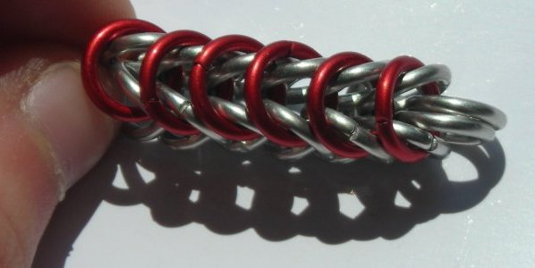

Constructing European 4:1 and Chain Variants
An Alternate Approach
Sooo…there are a lot of tutorials for making Boxchain. And there are a lot for making Byzantine, and the Roundmailles. So if you want to know how to make those weaves, step-by-step, there are plenty of places you can look, and I don’t have a prayer of offering you more than the likes of MAIL’s archives or Phong’s CGI tutorials.
So instead of taking the step-by-step, ring-monkey, anyone-can-do-it approach, I’m hoping to teach you the actual theory behind the weaves. I’ll show you the basic rules of construction, and hopefully, once you have that, you’ll see how it works for all of the basic European chain variants. Ideally, this will cover about ten different tutorials in one fell swoop. Instead of learning the steps for Boxchain, and the steps for Byzantine, and for Roundmaille and Inverted Roundmaille, and then having to ask for a tutorial on Turkish Roundmaille, you’ll actually be able to see how it works on your own.
This approach may be a tad more cerebral than the ring-monkey approach, but I’m pretty sure it isn’t rocket science. At any rate, I’ve got a digital camera and a web domain, so I can supply plenty of pictures. Ready? All right, let’s begin.
Basic European 4:1
We’ll start with the mother of all Euro weaves, the classic 4:1 sheet. Theoretically, you can learn this and all else will follow with just a few permutations. We’ll get to those later; for now, E4:1.1. Four closed rings onto one open. This is the basic credo of all the weaves covered in this tutorial. Close the open ring, arrange as shown, and what you now have is called a fivelet.
2. To add to the fivelet, put two closed rings onto one open – but don’t close the open one. This ring is going to be just like the one at the center of your fivelet, only it needs two more closed rings. It shares with the last open ring, thus:
And close it.
3. Keep making triplets and adding them to the last fivelet. You now have the technique to lengthen the patch as much as you like.
4. However, you may have noticed that only the central rings pass through four others. In E4:1, every ring must go through four others, and yet here, the rings along the edges only go through two. This is an incomplete sheet; but, if widened, the edge rings will have their four-apiece.
To do this, you will again make a triplet, but this time attach it to the first two rings on the bottom edge. Each of those rings now has three.
5. Put just one closed ring on an open ring, and pass it through its neighbor’s two rings – just like you were doing in steps 2-3 – plus one more ring above.
6. More close-open pairs, added in the same way, clear through to the end:
7. You can keep repeating steps 4-6 to widen the chain as much as you like. Only the edge rings will have a ring ratio lower than 4:1; every interior ring will have its full complement. In an ideal, infinite sheet, there would be no edges and every ring would have its four others. (However, an infinite sheet is not, um, entirely practical for most mundane maillers.)
All right, you know how to make a European 4:1 rectangle of any dimensions. Now…the fun stuff!
European 4:1 Chain Variants
The absolute simplest chain that can be made from E4:1 is Boxchain. If you stopped after step 3 above, you’d just have this basic ribbon……whose two edges could be connected with a ring going through two rings on either side…
…all the way down the length of the ribbon…

…to make a basic chain! And, hmm, this chain has four corners and four sides, rather like an extremely long, narrow…box…so we could call it…Boxchain…!
If you stopped after step 6, you’d have a ribbon five rows wide, and if you connected its edges in the same way, you would have a round, six-sided chain that one might think to call Roundmaille.
And if, for some reason, you had widened the ribbon to 7 rows and decided to stitch its edges together, you would have the (rather obscure and officially nameless) weave that I generally call Fourfold Roundmaille.
You could keep doing this, up to 9 and 11 and 13 rows stitched (even further if you like), but after a certain point it not only stops looking like a chain and starts looking like a flabby tube, but also becomes ridiculously boring. (Once you get up around fifty or so rows, you’ve got the sleeve of a hauberk.)
So that’s the basic European chain. The next thing (muahaha) to do to it is…(muahaHAhaha)… to permutate it!
So let’s begin by introducing the...
European Basic Chain Weave Family Tree
Every weave in the top chain is based off of Boxchain; that is, you can get to it from a ribbon of E4:1 three rows wide (plus stitching makes four rows, two in each direction, so these can be considered two-sided weaves).
In the middle chain, they’re all based off Roundmaille, and come from a ribbon five rows wide (plus stitching is six, three in each direction, so three-sided).
In the bottom chain, they come from a ribbon seven rows wide (eight with stitching, so four-sided).
In the mailling community at large, the weaves in the middle chain belong to the bigger group of three-sided weaves, from every family, which are collectively called the “triplicate” weaves. This is a handy naming convention, and it would be nice to apply to the two- and four-sided chains, but that would, I believe, make them “duplicates” and “quadruplicates,” respectively, and that really just doesn’t vibe with me.
The four colors represent the four basic permutations from the original Euro ribbon.
The aluminum weaves are the simplest chain derivatives of European 4:1, which we’ve just gone over. That is, each one is made from a ribbon folded around and stitched.
The green weaves are a hybrid of the aluminum and the yellow weaves. They are single units of the aluminum weaves separated by single units of the yellow ones.
The yellow weaves are the inverted Euro chain weaves. These are basically like European sheets turned 90º, rolled up, and stitched. However, it isn’t that simple, because the grain is slightly different. You know how, when you look edge-on at European 4:1, it does this sort of thing: /\/\/\. Well, with the inverses, the “valleys” don’t come back up into “mountains.” They keep curving around, and in this way, they form a hollow chain:
/¯\
\_/
That's a bit hard to understand, and it probably won't help you to make the weave. This is why it is easier to think of it as a permutation of the first weave. When you are adding on to the end of a Boxchain or Roundmaille, the rings tend to flip around in a way that can be really annoying, except when you want to make the inverted version, because you just have to let them flip to that natural state and they're inverted.
The bronze weaves are the captive inverted weaves. Simply, they are the inverted weaves with at least one ring captured in each unit (a captive ring does not pass through any other rings, but is trapped mechanically in place by the rings around it). Theoretically, these aren’t very significant, but CIR is at least a fairly common weave, and they have a nice aesthetic quality. All of the samples shown have only one captive per unit, but depending on ring size it is possible to get up to two or three captives per unit.
You'll notice that I don't have samples of the fourfold inverted chains. That's because, as you get more and more rows into the chain, it starts resisting inversion. The triplicate inverted round weave is already quite stiff; I tried to make the fourfold but, with the ring sizes I have, couldn't get it any longer than about two units long. Only one person, to my knowledge, has bothered to make fourfold (or, as he calls it, Quad) captive inverted round. I tried but couldn't replicate his ring sizes, so here's the link to his picture:
http://mailleartisans.org/weaves/subcat.cgi?key=6976
A Note on Inverted Boxchain
It is occasionally assumed that the inverse of Boxchain is Full Persian 6:1. This is probably because they can both be made from the same initial 2-2-2 chain (though with different initial arrangements), and because they have a similar four-sided structure. While there is a visual similarity, I submit that these two weaves are not inverses of each other, but more like parallel branches of their respective families. The real inverse of Boxchain is in fact – this may be a monumental anticlimax, but I’ll show you the proof in a moment – a 4-2 chain. Yep, that's it, just a unit chain. So what’s the deal with Box and FP? Well, you can think of it this way: Box is to FP as Roundmaille (three-sided box) is to Hilt Chain (three-sided Persian), and as a 2-1 chain (half of Box) is to Half Persian 3:1 (half of FP).As for why FP is NOT the Boxchain inverse, there are a lot of ways to prove this. The first one is obvious: Box is a European weave, and FP is a Persian weave. That doesn’t make them inverses, it makes them distant cousins at best. Next up: Box is a 4:1 weave, whereas FP is a 6:1 weave. Now, remember that 4 rings onto 1 is supposed to be the credo of all the weaves in this tutorial, because they are all based off European 4:1. And it really doesn’t seem right that the ring ratio should change just for the inverse of boxchain, does it? Not when Inverted Roundmaille still has the same 4:1 ratio as plain Roundmaille. And come to that, FP really doesn’t look anything like Inverted Roundmaille. The connections are completely different. Inverted RM doesn’t have a trace of a Persian connection, whereas FP, well, Full Persian…is pure Persian connections.
Why the 4-2 Unit Chain IS the inverse to Boxchain: Again, there are several ways to prove this. For example, imagine starting from Inverted Roundmaille. To make the quadruplicate version, you would add a column of rings; therefore, to make the duplicate version, you would remove a column in the same way. Try it sometime, it would be an interesting exercise. You’ll get a 4-2 chain.
Another way to look at it is by comparing the hybrid weaves: Byzantine, Turkish Roundmaille, and Celtic Roundmaille. In the latter two, the segments between the orbs are simply the inverse of each weave. In Turkish Roundmaille, they are Inverted Roundmaille. In Celtic Roundmaille, they are Quad Inverted Roundmaille. So what are they in Byzantine? Have a look on the Family Tree above and you’ll see two rings. Not a Full Persian unit; just two rings, or a single unit of a 2-2-2 chain.